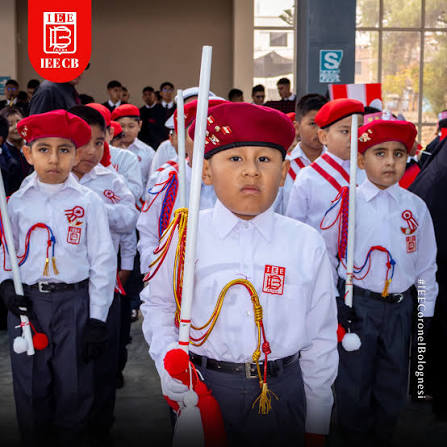
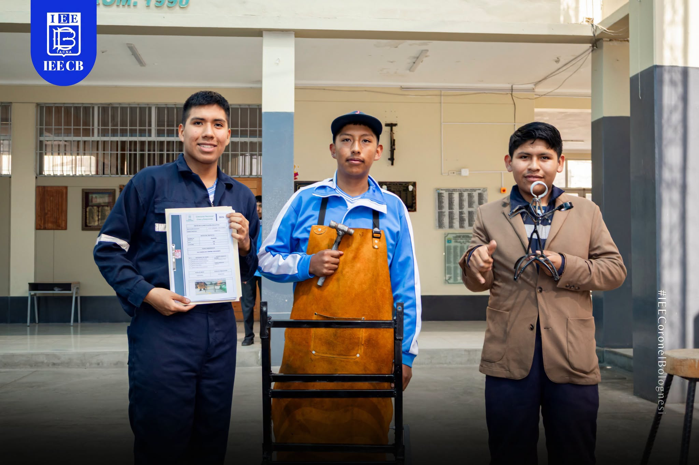
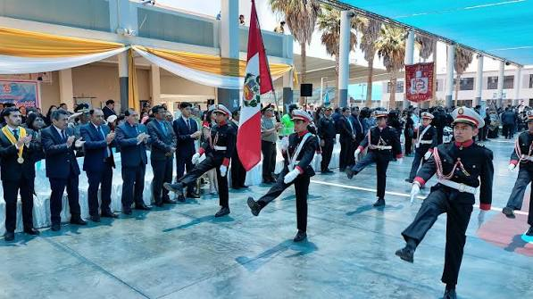
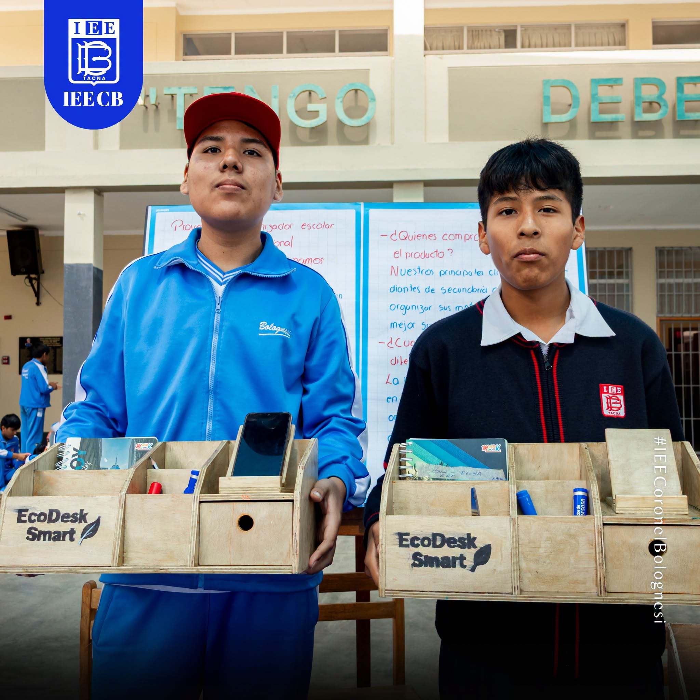
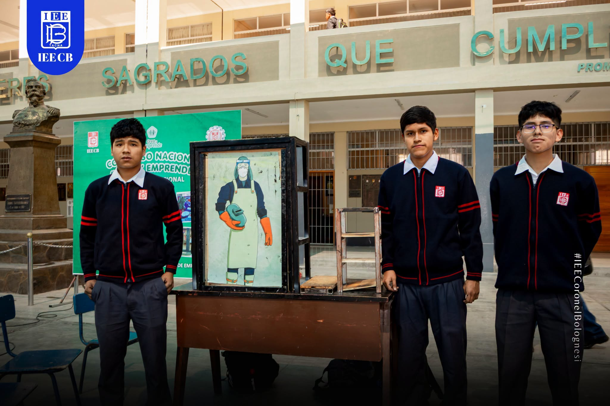
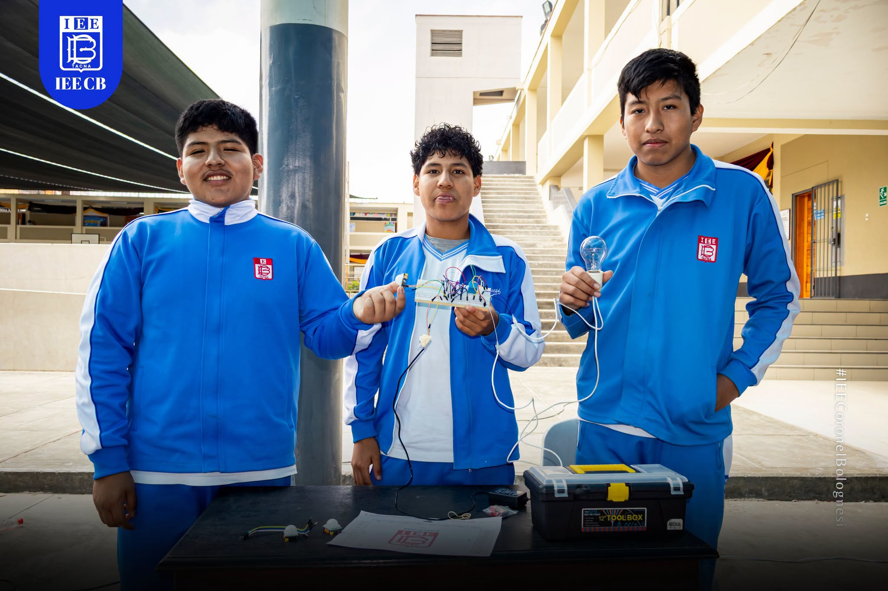
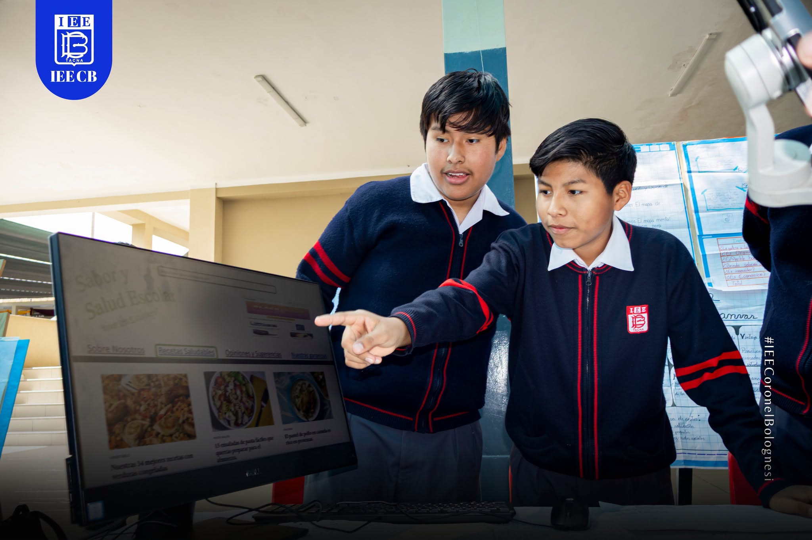
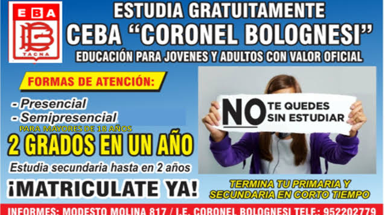

estudiantes-primaria.jpg
Aprender para transformar
Propuesta Educativa
Formación humanista y técnica con enfoque por competencias, innovación, emprendimiento y conciencia ambiental.
Modelo educativo
El estudiante construye su aprendizaje y desarrolla competencias para la vida.
Trabajamos con el enfoque por competencias del Currículo Nacional de la Educación Básica (CNEB). Concebimos al estudiante como constructor de su propio conocimiento, capaz de superar sus limitaciones y resolver conflictos mediante el diálogo y la concertación.
- Trabajo colegiado y grupos de interaprendizaje.
- Reuniones de equipo por áreas.
- Monitoreo y acompañamiento pedagógico.
- Participación en concursos escolares, científicos, deportivos y artísticos.
Proyecto educativo: “Transformando el Aula: Matemática Viva y Ciudadanía Ética con IA”.

Añadir imagen: estudiantes-secundaria1.jpgNiveles educativos
Atención educativa en primaria y secundaria.
Educación Primaria
Grados atendidos: 1.° a 6.°.
Turno: mañana, de 7:30 a. m. a 12:50 p. m.
Evaluación formativa y bimestral, con informes de progreso para las familias.

estudiantes-secundaria.jpgEducación Secundaria
Grados atendidos: 1.° a 5.° año.
Turno I: 7:30 a. m. a 12:50 p. m.
Turno II: 12:45 p. m. a 6:15 p. m.
Desarrollo de competencias en áreas curriculares y talleres.
Áreas curriculares
Desarrollamos las áreas del Currículo Nacional de la Educación Básica, entre ellas Comunicación, Ciencias Sociales, Desarrollo Personal, Ciudadanía y Cívica, Ciencia y Tecnología, Inglés, Educación Religiosa y Educación para el Trabajo. Las familias pueden solicitar la exoneración de Educación Religiosa hasta el mes de marzo.
Áreas técnicas
Los talleres promueven habilidades técnicas, proyectos productivos y orientación vocacional.

taller-carpinteria.jpgCarpintería y Ebanistería
Elaboración y acabado de muebles, estructuras y productos de madera.

taller-mecanica.jpgMecánica de Producción
Operación de máquinas-herramientas, soldadura y fabricación de elementos metálicos.

taller-electricidad.jpg'">Electricidad y Electrónica
Diseño e instalación de circuitos, tableros de control y fundamentos de microelectrónica.

taller-computacion.jpg'">Computación e Informática
Ofimática, diseño digital, maquetación web y pensamiento computacional.
Educación Básica Alternativa (CEBA)
El CEBA Coronel Bolognesi atiende a jóvenes y adultos que desean iniciar o culminar sus estudios, con modalidad presencial y semipresencial.
- Ciclo Inicial e Intermedio, equivalente a Primaria.
- Ciclo Avanzado, equivalente de 1.° a 4.° de Secundaria.
- Turno nocturno: lunes a viernes, de 5:30 p. m. a 9:45 p. m.

Cuando recibas la imagen, guárdala como img/propuesta/CEBA_Coronel.jpg